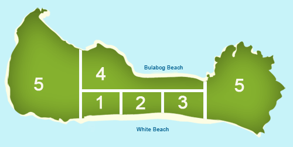

Map of Boracay
Boracay is divided into Stations
- Station 1
- Station 2
- Station 3
- Station 4
- Station 5
Station 1
Is where the majority of the luxury hotels are located as well as the water sports and activities.
Station 2
This station is well known for its nightlife, food, market, and of course D'Mall. D'Mall is where you would go for shopping but is expensive because its mainly aimed towards tourist.
Station 3
This is where you will find more budget hotels, altough its far from the nightlife its quieter and has the clearest beaches of the island.
Station 4
This area is good for water sports and has villas you can stay in. It may seem far on the map but its walkable. Beware! Locals will try to trick you, they'll try to convince you it is far and you should pay for a taxi but it really isn't. My family and I were able to walk to other side in 10-15 mins.
Station 5
Station 5 closest to Station 1 is mainly private beaches, expensive hotels, private properties and golfing.
Station 5 closest to Station 3 is private properties, homes, and where the main boat station is located.
| Station 1 | Is where the majority of the luxury hotels are located as well as the water sports and activities |
|---|---|
| Station 2 | Is where the majority of the luxury hotels are located as well as the water sports and activities |
| Station 3 | This station is well known for its nightlife, food, market, and of course D'Mall. D'Mall is where you would go for shopping but is expensive because its mainly aimed towards tourist. |
| Station 4 | This area is good for water sports and has villas you can stay in. It may seem far on the map but its walkable. Beware! Locals will try to trick you, they'll try to convince you it is far and you should pay for a taxi but it really isn't. My family and I were able to walk to other side in 10-15 mins. |
| Station 5 | This area is good for water sports and has villas you can stay in. It may seem far on the map but its walkable. Station 5 closest to Station 1 is mainly private beaches, expensive hotels, private properties and golfing. |
Geography
Boracay is a tropical island located approximately 315km (200 miles) south of Manila and 2km off the northwest tip of the island of Panay in the Western Visayas region of the Philippines. It is one of the country’s most popular tourist destinations. The island comprises the barangays of Manoc-Manoc, Balabag, and Yapak (3 of the 17 barangays which make up the municipality of Malay.
Boracay Island is located off the northwest corner of the island of Panay, and belongs to the Western Visayas island-group, or Region 6, of the Philippines. The island is approximately seven kilometers long, dog-bone shaped with the narrowest spot being less than one kilometer wide, and has a total land area of 10.32 square kilometers. South-facing Cagban Beach is located across a small strait from the jetty port at Caticlan on Panay island, and the Cagban jetty port serves as Boracay’s main entry and exit point during most of the year. When wind and sea conditions dictate, east-facing Tambisaan Beach serves as an alternative entry and exit point.
Boracay’s two primary tourism beaches, White Beach and Bulabog Beach, are located on opposite sides of the island’s narrow central area. White Beach faces westwards and Bulabog Beach faces eastwards. The island also has several other beaches.
White Beach is the main tourism beach. It is a bit over four kilometers long and is lined with resorts, hotels, lodging houses, restaurants, and other tourism-related businesses. In the central portion, for about two kilometers, there is a footpath known as the Beachfront Path separating the beach itself from the establishments located along it.
North and south of the Beachfront Path, beachfront establishments do literally front along the beach itself. In past years, Boracay entry and exit was done through three boat stations located along the Beachfront Path, but that practice was discontinued in 2007 in favor of the single-point entry and exit mentioned above. Several roads and paths connect the Beachfront Path with Boracay’s Main Road, a vehicular road which runs the length of the island. At the extreme northern end of White Beach, a footpath runs around the headland there and connects White Beach with Diniwid Beach.
Across the island from White Beach is Bulabog Beach, a secondary tourism beach and Boracay’s main windsurfing and kiteboarding area.
For Land Use and Management, the island of Boracay is divided into 400 hectares of preserved forestland and 628.96 hectares of agricultural land.